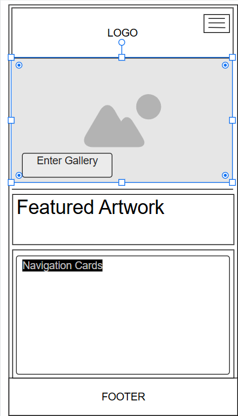
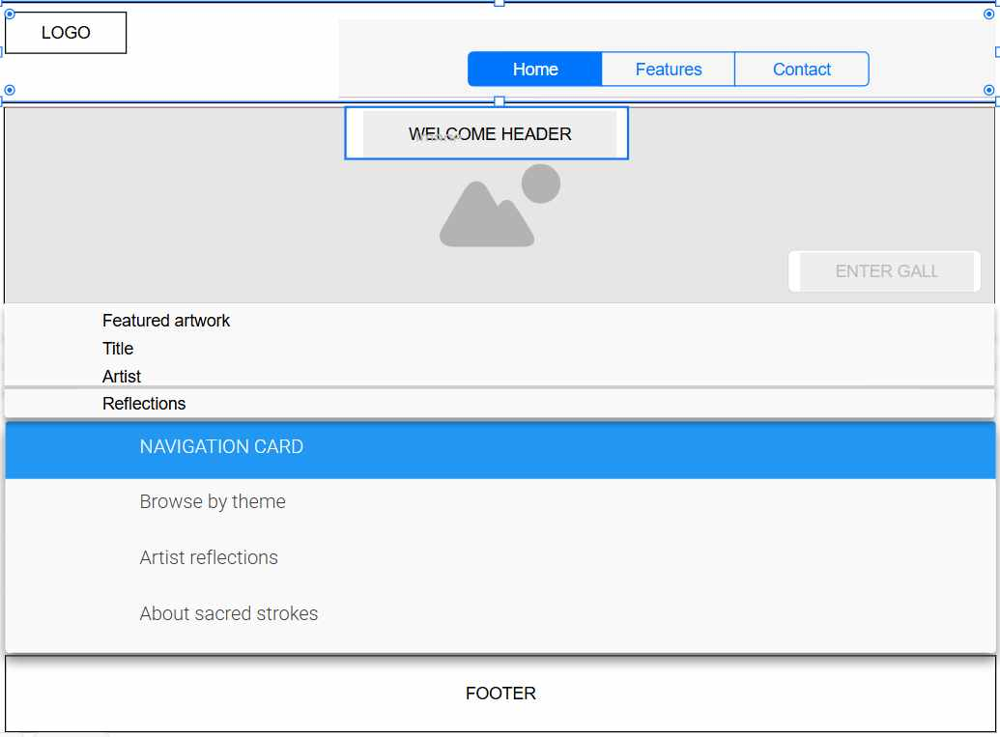

Site Name
Sacred Strokes — It reflects the purpose of showcasing spiritually inspired artwork. “Sacred Strokes” evokes reverence and peace.This site will feature a gallery of spiritual artwork, artist bios, reflective blog posts, and a contact form for commissions or collaboration.”
Site Purpose
The site serves as a digital sanctuary for spiritually inspired artwork. It offers curated galleries, artist reflections, and thematic essays that invite visitors to contemplate grace, discipleship, and divine beauty.
Scenarios
- How can I explore artwork that reflects themes of redemption and light?
- Where can I read the artists reflections or spiritual testimonies?
Color Schema
- #2E4053 (Slate Blue) — Used for headers and navigation to convey depth and calm.
- #F4F6F7 (Soft Gray) — Used for background and body text areas to maintain serenity and readability.
Color Schema Use in Document
This document uses the selected color schema in the background, headings, and text styling.
Typography
- Playfair Display — Used for headings to evoke elegance and tradition.
- Open Sans — Used for body text to ensure clarity and accessibility.
Both fonts are applied in this document using external CSS.
Wireframe
Mobile View

- Logo and hamburger menu
- Hero image with welcome message
- “Enter the Gallery” button
- Featured artwork with title and reflection
- Navigation cards (Themes, Reflections, About)
- Footer with social links and contact
Desktop View

- Horizontal navigation bar with logo
- Hero section with large image and welcome message
- Grid layout of featured artworks (3-4 across)
- Sidebar with navigation links
- Footer with scripture quote, social links, and contact
Valid HTML and CSS
This document uses valid HTML5 and external CSS. It includes a proper title and passes validation checks.